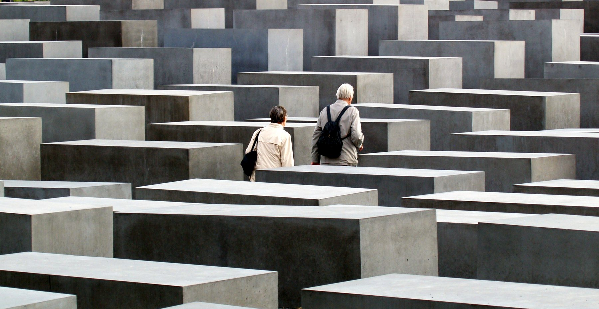
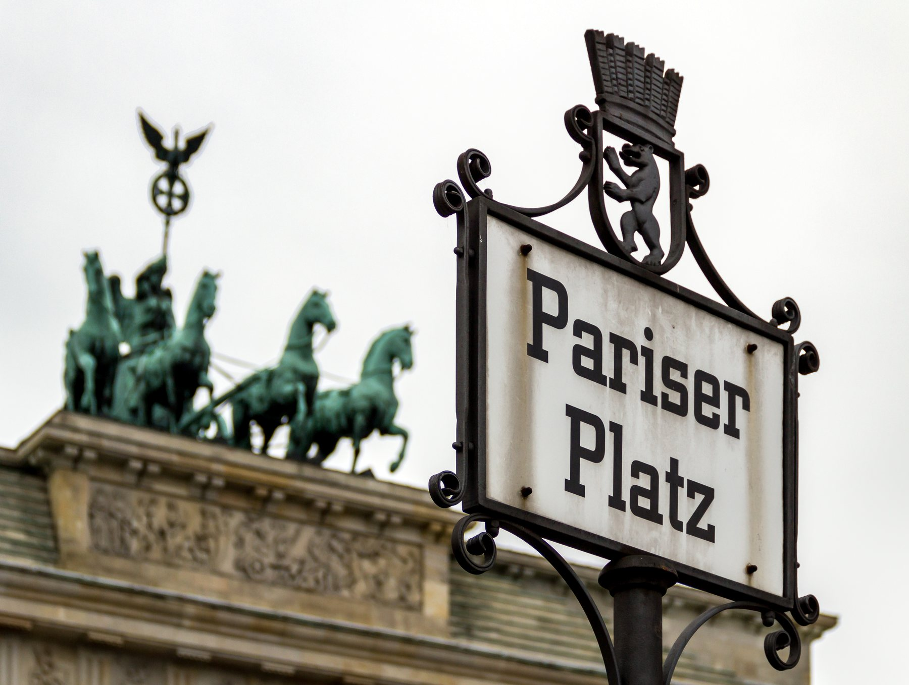

Berlin memorial planner
Holocaust Memorial Visit Planner
Choose the visit shape that fits your day. The goal is not to see more memorials; it is to give this one enough attention.
Current check: field open at all times, Information Centre Tue-Sun 10:00-18:00.
Last admission is 45 minutes before closing. Check the official page before building a day around the exhibition.
Time available
Day pressure
Next direction
Quiet field visit
Enter from the edge, walk slowly into the deeper rows, pause, and leave without treating the field like a photo maze.
20 min
field only
field only
Brandenburg Gateorientation
→
Field of Stelaeslow crossing
→
Tiergarten edgequiet reset
Etiquette
Walk slowly, keep noise down, do not climb or jump on the stelae, and use photos with restraint.
Do not stack
If the day already includes Sachsenhausen or Topography of Terror, keep this visit shorter and leave space afterward.

